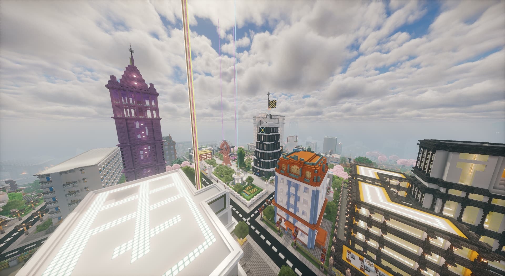

稳定版
下载暂未开放v25.0.9
2025-05-07 更新 · 2.81 GB

JOINT EXPERIMENTAL NEW AREA

JOINT EXPERIMENTAL NEW AREA / WORLD ARCHIVE
从一片平地到层层高楼，保存建设中的每一步。获取联合实验新区存档，继续探索它的街区、建筑与故事。
查看当前版本沿着道路穿过城区，回到项目开始的地方。这里集中展示当前版本、下载渠道、历代存档与安装方法。
小人眼镜联合实验新区始于 2020 年的城区建设计划，2021 年正式更名。主城区道路与主要管理部门在持续建设中逐步成形。
启动器与地图存档是不同文件；下载地图请使用下方网盘渠道。
以下链接延续原站提供的网盘地址；打开网盘后，请核对实际文件名与版本说明。
阿里云盘和配套整合包暂未提供有效下载地址，开放后可在本页补充。
2025-05-07 更新 · 2.81 GB
2024-04-28 更新 · 2.47 GB
2021-07-21 更新 · 0.02 GB · 提取码 4vb4
获取地图存档压缩包，使用解压工具打开。
打开 Minecraft Java 版的 .minecraft/saves 文件夹。
将解压后的「联合实验新区」文件夹放进 saves。
进入游戏单人模式，选择新区存档开始游玩。
核对存档实际适配的游戏版本，并按下载包说明安装所需的配套资源或模组。
可以尝试上方的另一个网盘渠道，并核对对应提取码。
允许个人非商用开服；请勿二次打包倒卖存档。
二次发布需得到授权，并标注原项目「联合实验新区」来源。
让世界慢下来
NOW PLAYING
联合实验新区音乐角
00 / 00点击播放，开启音乐